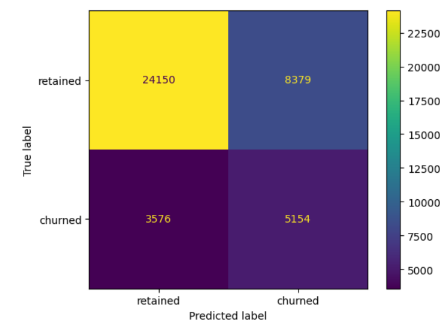

Python || Binomial logistic regression: Bank Churn Dataset
In this project, our primary objective is to build a binomial logistic regression model and evaluate the model's performance to demonstrate knowledge of exploratory data analysis (EDA) and a binomial logistic regression model. Our model will help to detect what variables affects the retention od the bank users. This is valuable information for the stakehoders. If we predict the user behavior they can invest in the areas where the retention is low
To address the business' request, I will conduct a binomial logistic regression to estimate the likelihood of chirn of each customer
- Exploring and cleaning data
- Using plots and descriptive statistics to select the independent variables
- Creating a Binomial logistic regression model
- Interpreting model outputs and communicating the results to non-technical stakeholders
Familiarize with the data's features
- customer_id, unused variable.
- credit_score, used as input.
- country, used as input.
- gender, used as input.
- age, used as input.
- tenure, used as input.
- balance, used as input.
- products_number, used as input.
- credit_card, used as input.
- active_member, used as input.
- estimated_salary, used as input.
- churn, used as the target. 1 if the client has left the bank during some period or 0 if he/she has not.
Check out the process and code c:
Conclusions
- age' was by far the most important feature in the model. It had a positive correlation with user churn (+0.75), User churn rate increased as the values in 'age' increase,This is called a positive linear relationship. The bank should focus on the older user
- User churn rate decrease as the values in 'credit_score' increase. it's a powerfull insight, maybe the bank must focus in user with poor 'credit_score'
- In a multiple logistic regression model, features can interact with each other and these interactions can result in seemingly counterintuitive relationships. This is both a strength and a weakness of predictive models, as capturing these interactions typically makes a model more predictive while at the same time making the model more difficult to explain.
- If we adjust the threshold we can improve the performance of the model. For each model that we make, the threshold is set by the case. We should test various thresholds to evaluate whether our model is the best.